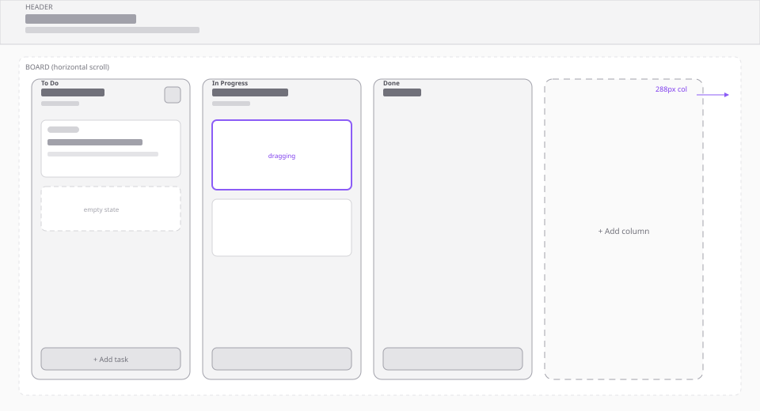

Kanban Board - Wireframes
Low-fidelity layouts for desktop, mobile, interactions, and component structure.
SVG sources live in docs/wireframes/.
Desktop board
Fixed-width columns in a horizontal scroll region; header stays pinned above the board.

Mobile board
One primary column per viewport with snap scroll; task list scrolls inside the column.

Task card
Priority badge, overflow menu, inline edit.

Add task flow
Three-step flow with validation rules.

Component architecture
React tree and Zustand store relationships.